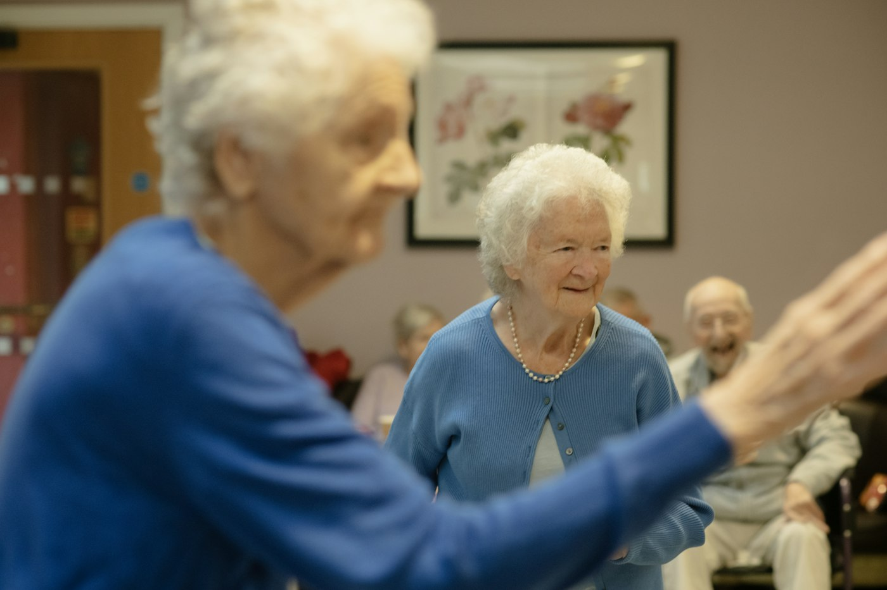
Em casa
Para quem tem dificuldade de sair, está acamado, em pós-operatório ou prefere o conforto de casa. O treino acontece no lugar onde a pessoa vive, e já serve para a rotina dela.
Sou Mateus Machado, fisioterapeuta. Atendo em domicílio e no consultório quem tem dor, está saindo de uma cirurgia ou precisa voltar a se mover com segurança.
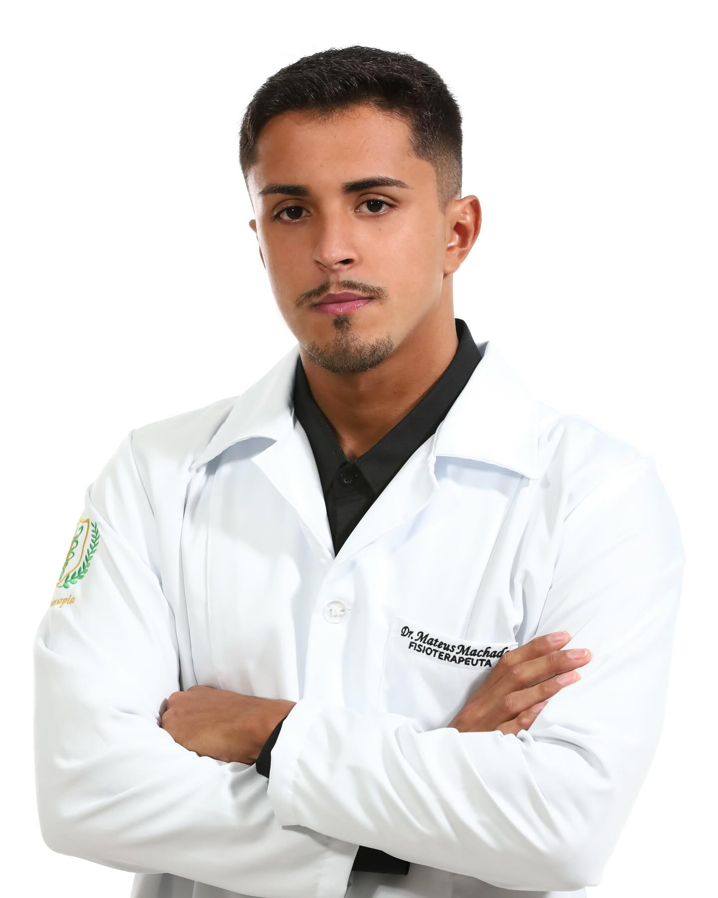
O tratamento é o mesmo, com avaliação completa e plano individual. Muda só o lugar: escolha o que faz mais sentido para a sua rotina.

Para quem tem dificuldade de sair, está acamado, em pós-operatório ou prefere o conforto de casa. O treino acontece no lugar onde a pessoa vive, e já serve para a rotina dela.
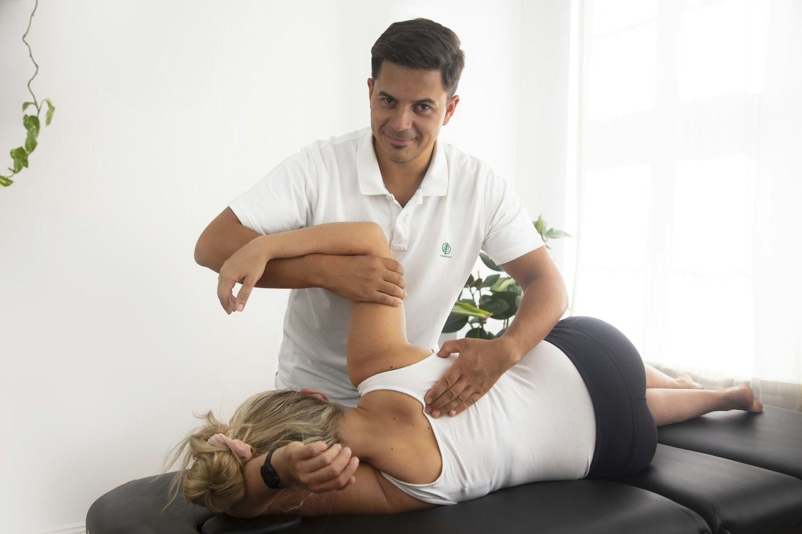
Para dores musculares e articulares, lesões e reabilitação de quem pode se deslocar, com avaliação completa e plano de exercícios.
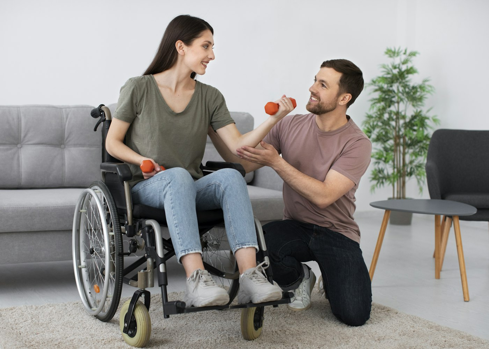
A fisioterapia vai até onde o paciente está.
Atendimento domiciliar em Tubarão e regiãoToque na região e veja como a fisioterapia ajuda. A mensagem para agendar já vai pronta, com o que você sente.
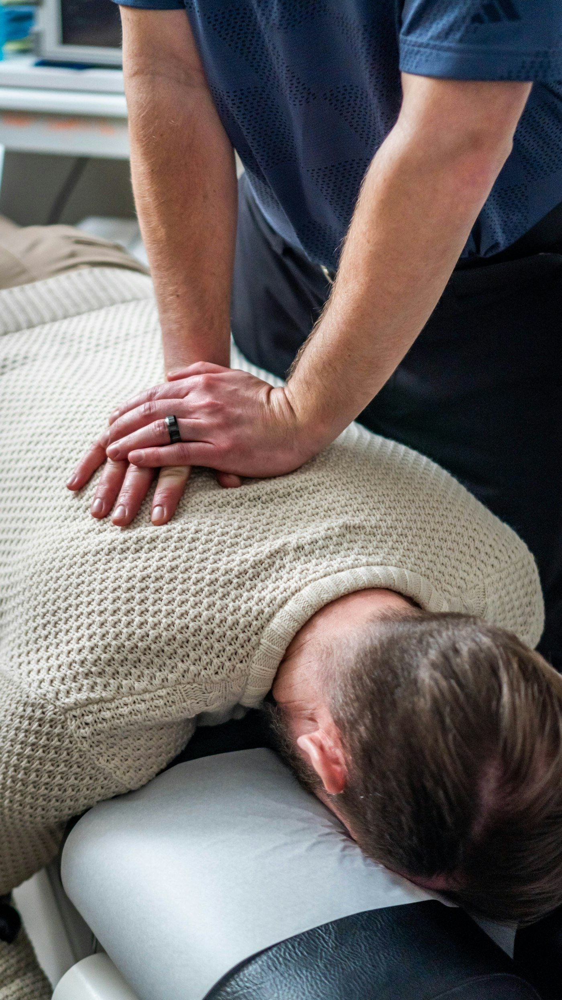
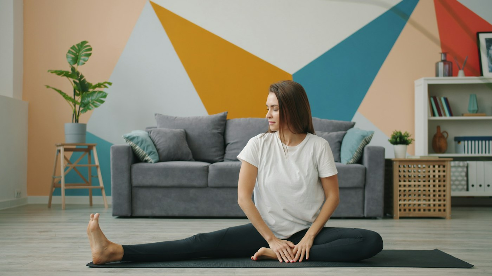
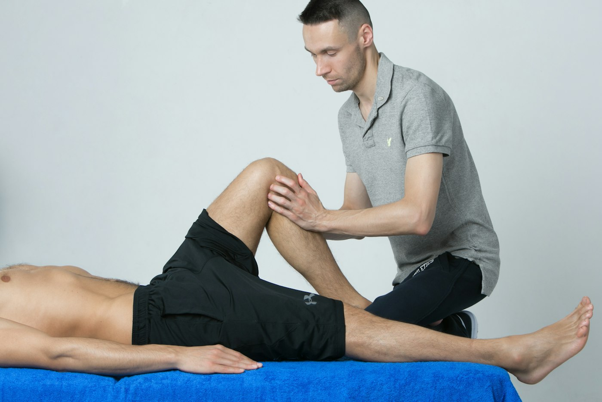
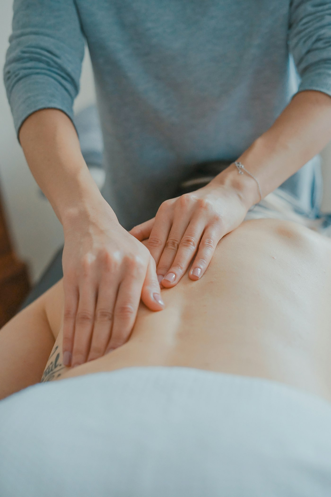
Pelo WhatsApp, conta o que está sentindo e se prefere atendimento em casa ou no consultório.
Na primeira sessão eu avalio, entendo a sua rotina e explico com calma o que está acontecendo.
Sessões com objetivo claro e exercícios para continuar fazendo entre uma visita e outra.
Para muita gente, o mais difícil da fisioterapia é chegar até ela. Em casa, o tratamento cabe na vida da pessoa.
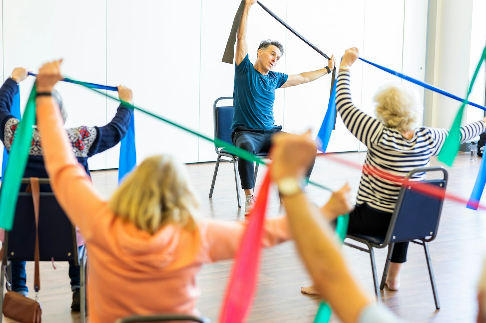
Sem trânsito, sem escada, sem sala de espera.
Quem não precisa se deslocar falta menos e evolui mais rápido.
A sessão inteira é só sua, do começo ao fim.
Levantar da cama, usar o banheiro, subir o degrau da sua casa.
Quem cuida aprende como ajudar no dia a dia.
O objetivo é depender menos de ajuda, e com segurança.
Fisioterapia não é protocolo padrão. Cada corpo responde de um jeito.
A gente combina o melhor momento para você.
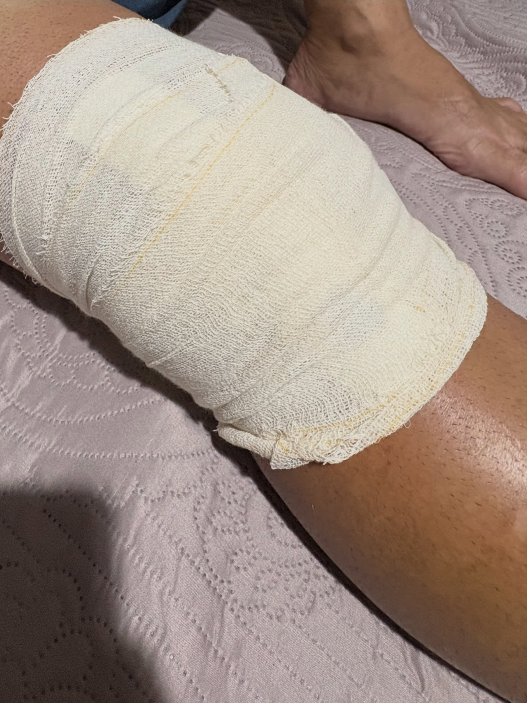
Hoje encerramos mais um processo de reabilitação, e não apenas um tratamento.
Cada alta é o fim de um caminho feito junto: da dor e da imobilização até a volta para a rotina, com força e confiança.
Mateus Machado, no InstagramDicas e respostas que eu publico no @fisio.mateusmchdo.
Se a sua não estiver aqui, me chama no WhatsApp.
Não é obrigatório para começar. Se você tiver exames ou o relatório da cirurgia, separe para a avaliação: eles ajudam a montar o plano.
Em média 50 minutos. A frequência, de uma a três vezes por semana, é definida na avaliação conforme o seu objetivo.
Tubarão e cidades da região. Me mande o seu bairro pelo WhatsApp que eu confirmo o atendimento e os horários.
Não. Eu levo o material necessário para a sessão e adapto os exercícios ao que existe na sua casa.
O atendimento é particular. Eu forneço recibo para você pedir reembolso ao seu plano, se ele oferecer.
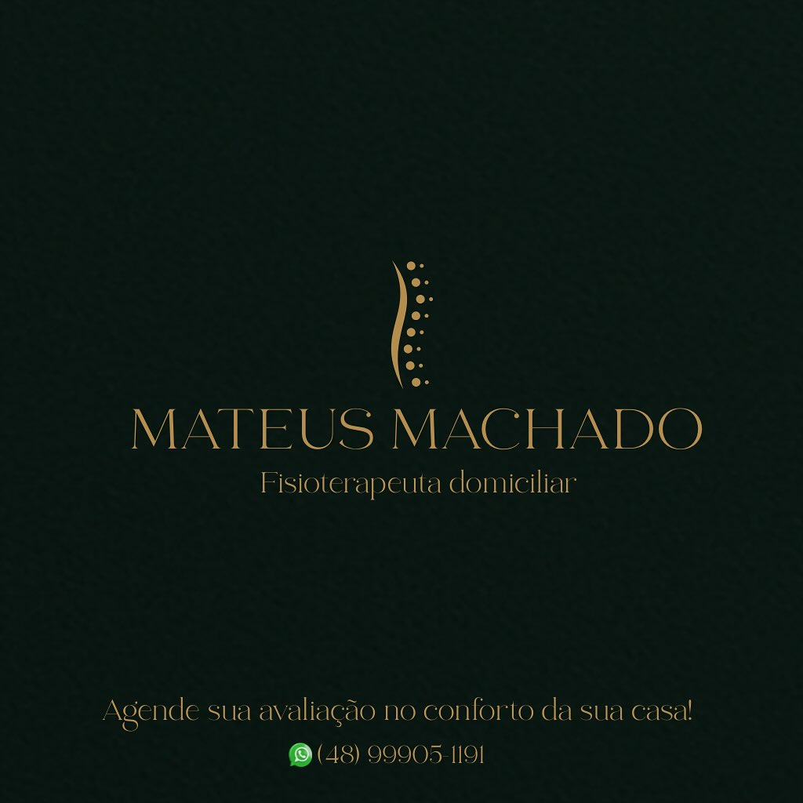
Mande uma mensagem dizendo o que você sente e onde mora. Respondo com os horários disponíveis.